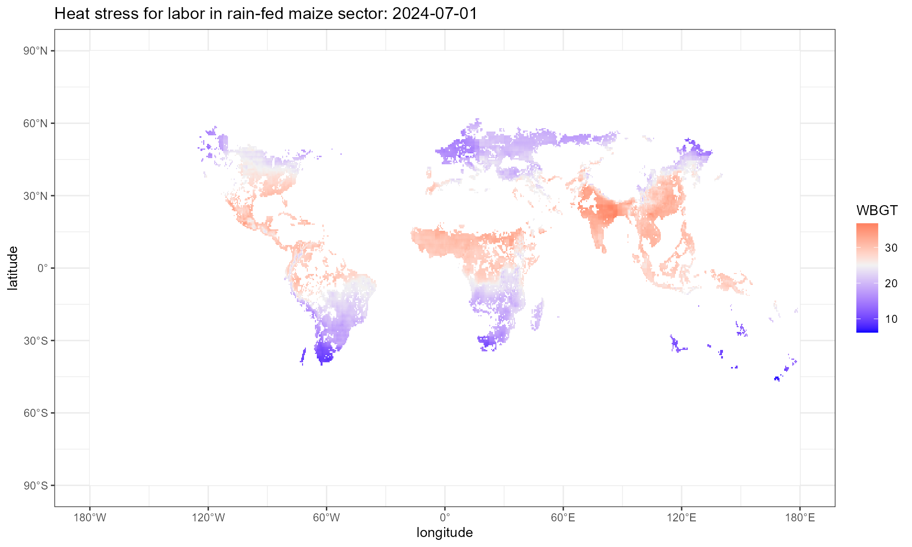
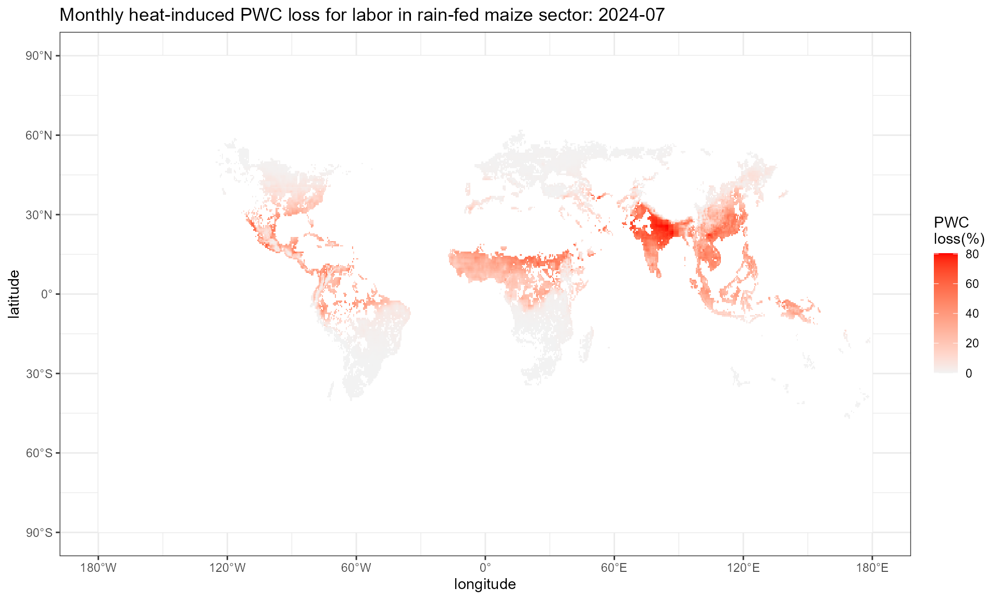
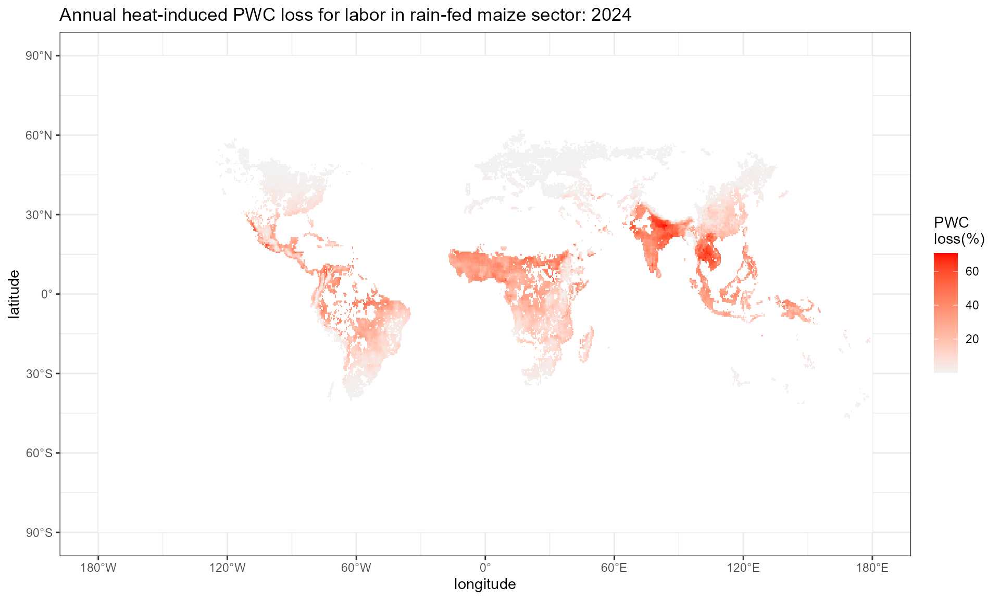
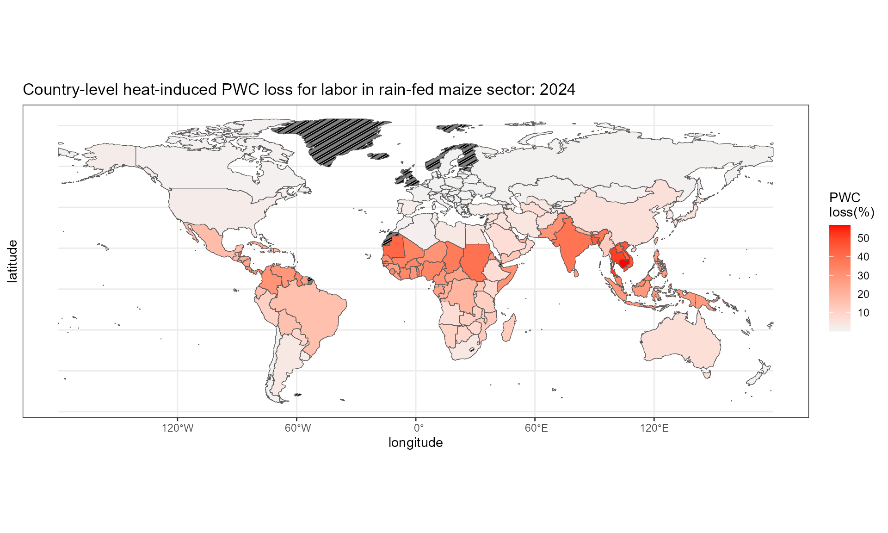

HELPS-vignette.Rmd
library(HELPS)
library(raster)
#> Loading required package: sp
library(dplyr)
#> Warning: package 'dplyr' was built under R version 4.4.1
#>
#> Attaching package: 'dplyr'
#> The following objects are masked from 'package:raster':
#>
#> intersect, select, union
#> The following objects are masked from 'package:stats':
#>
#> filter, lag
#> The following objects are masked from 'package:base':
#>
#> intersect, setdiff, setequal, union
library(ggplot2)
library(knitr)
library(ggpattern)Users can download a set of example data into folder
HELPS_Example_Data by running
get_example_data(). The example data includes grid-level
daily and monthly near-surface air temperature (tas), daily and monthly
near-surface relative humidity (hurs), daily surface air pressure (ps),
and monthly grid-level surface downwelling shortwave radiation (rsds).
User Notice in the README provides more details of
input data HELPS is compatible with.
The HELPS package operates on 0.5 degree resolution,
bias-corrected outputs from Earth System Models and General Circulation
Models participating in the CMIP process. Several options to access such
data exist: - The ISIMIP2b
repository contains outputs from CMIP5-era models (GFDL-ESM2M,
HadGEM2-ES, IPSL-CM5A-LR, and MIROC5) for specific scenarios - The ISIMIP3b
repository contains outputs from CMIP6-era models (GFDL-ESM4,
IPSL-CM6A-LR, MPI-ESM1-2-HR, MRI-ESM2-0, and UKSEM1-0-LL) for specific
scenarios - If a user wishes to explore other CMIP models or
bias-correct model data against different observational data than that
used by ISIMIP, the BASD
python package is available for ease of use. BASD implements an
extension of the bias adjustment and statistical downscaling method used
in ISIMIP3b (ISIMIP3BASD,
Lange 2021). The ISIMIP3BASD code base can also be used directly. For
additional information, please see here.
- If a user wishes to explore novel scenarios not covered by CMIP models
or the ISIMIP collection, we suggest a combination of STITCHES emulation and BASD
bias correction and downscaling.
HELPS has been tested with both ISIMIP data and outputs from BASD.
Besides the climate projections, HELPS also takes GGCMI
Phase 3 crop calendar (Jägermeyr et al. 2021) (https://zenodo.org/records/5062513) and SPAM harvested
area (IFPRI, 2024) (https://doi.org/10.7910/DVN/SWPENT) data as input for
temporal and spatial aggregation in the package.
HELPS provides measurement of crop specific labor heat
stress exposure and heat-induced physical work capacity loss for 93
sectors, consisting of 46 SPAM crops by 2 irrigation practices (rain-fed
and irrigated) and 1 noncrop sector. Below is the fUll list of sectors
supported in HELPS, and refer to Table 1 for crop mapping.
Note that for SPAM crops without corresponding ggcmi crop calendar, the
crop calendar is assumed to be the whole year.
SECTOR_ALL <- c("WHEA_I", "RICE_I", "MAIZ_I", "SOYB_I", "BARL_I", "MILL_I", "PMIL_I", "SORG_I", "OCER_I",
"POTA_I", "SWPO_I", "YAMS_I", "CASS_I", "BEAN_I", "CHIC_I", "COWP_I", "PIGE_I", "LENT_I",
"GROU_I", "SUNF_I", "RAPE_I", "SESA_I", "SUGC_I", "SUGB_I", "COTT_I", "OFIB_I", "BANA_I",
"PLNT_I", "CITR_I", "TROF_I", "TEMF_I", "TOMA_I", "ONIO_I", "VEGE_I", "ORTS_I", "OPUL_I",
"CNUT_I", "OILP_I", "OOIL_I", "COFF_I", "RCOF_I", "COCO_I", "RUBB_I", "TEAS_I", "TOBA_I",
"REST_I",
"WHEA_R", "RICE_R", "MAIZ_R", "SOYB_R", "BARL_R", "MILL_R", "PMIL_R", "SORG_R", "OCER_R",
"POTA_R", "SWPO_R", "YAMS_R", "CASS_R", "BEAN_R", "CHIC_R", "COWP_R", "PIGE_R", "LENT_R",
"GROU_R", "MAIZ_R", "RAPE_R", "SESA_R", "SUGC_R", "SUGB_R", "COTT_R", "OFIB_R", "BANA_R",
"PLNT_R", "CITR_R", "TROF_R", "TEMF_R", "TOMA_R", "ONIO_R", "VEGE_R", "ORTS_R", "OPUL_R",
"CNUT_R", "OILP_R", "OOIL_R", "COFF_R", "RCOF_R", "COCO_R", "RUBB_R", "TEAS_R", "TOBA_R",
"REST_R",
"NONCROP")| SPAM | SPAM Crop Name | ggcmi | ggcmi Crop Name |
|---|---|---|---|
| WHEA | Wheat | wh | wheat |
| RICE | Rice | ri | rice |
| MAIZ | Maize | mai | maize |
| SOYB | Soybean | soy | soybean |
| BARL | Barley | bar | barley |
| MILL | Small Millet | mil | millet |
| PMIL | Pearl Millet | mil | millet |
| SORG | Sorghum | sor | sorghum |
| OCER | Other Cereals | rye | rye |
| POTA | Potato | pot | potato |
| SWPO | Sweet Potato | cas | cassava |
| YAMS | Yams | cas | cassava |
| CASS | Cassava | cas | cassava |
| BEAN | Bean | bea | beans |
| CHIC | Chickpea | pea | field peas |
| COWP | Cowpea | pea | beans |
| PIGE | Pigeon Pea | pea | beans |
| LENT | Lentil | pea | field peas |
| GROU | Groundnut | nut | groundnut |
| SUNF | Sunflower | sun | sunflower |
| RAPE | Rapeseed | rap | rapeseed |
| SESA | Sesame Seed | sun | sunflower |
| SUGC | Sugarcane | sgc | sugar cane |
| SUGB | Sugarbeet | sgb | sugar beet |
| COTT | Cotton | cot | cotton |
| OFIB | Other Fiber Crops | ||
| BANA | Banana | ||
| PLNT | Plantain | ||
| CITR | Citrus | ||
| TROF | Other Tropical Fruit | ||
| TEMF | Temperate Fruit | ||
| TOMA | Tomato | ||
| ONIO | Onion | ||
| VEGE | Other Vegetables | ||
| ORTS | Other Roots | ||
| OPUL | Other Pulses | ||
| CNUT | Coconut | ||
| OILP | Oilpalm | ||
| OOIL | Other Oil Crops | ||
| COFF | Arabic Coffee | ||
| RCOF | Robust Coffee | ||
| COCO | Cocoa | ||
| RUBB | Rubber | ||
| TEAS | Tea | ||
| TOBA | Tobacco | ||
| REST | Rest Of Crops |
This step employs cal_heat_stress() function, which
takes multiple arguments. SECTOR denotes which sector the
labor is involved in. The current version of HELPS
supports 93 sectors, consists of 92 crop sectors (46 SPAM crops by 2
irrigation practices) and 1 non-crop sector. HS denotes the
heat stress function that takes atmospheric variables as input and
outputs heat stress level. The current version of HELPS
covers 3 HS(), WBGT_ESI(),
WBGT_shade(), and WBGT_sun().
WBGT_ESI, Environmental Stress Index, takes hurs, tas, and
rsds as inputs to approximate WBGT. WBGT_shade, from Dunne
et al. (2013), takes hurs, tas, and ps as inputs to approximate WBGT.
This method assumes full shade and night adaptation and optimization of
structures, clothing, activity scheduling. WBGT_sun, is
WBGT_shade + 3, that approximate the WBGT without
shade.
YEAR_INPUT denotes a year of interest. ...
denotes the file name(s) of atmospheric variable projections. Note that
the number of files need to be equal to the number of argument of
HS(). Example below takes monthly hurs (relative
humidity), tas (near-surface air temperature), and ps
(surface air pressure) and WBGT_ESI to calculate heat stress
levels.
wbgt.sun.day <- cal_heat_stress(TempRes = "day", SECTOR = "MAIZ_R", HS = WBGT_sun, YEAR_INPUT = 2024,
"../HELPS_Example_Data/hurs_example_day.nc",
"../HELPS_Example_Data/tas_example_day.nc",
"../HELPS_Example_Data/ps_example_day.nc")
#> |---------|---------|---------|---------|========================================= |---------|---------|---------|---------|========================================= |---------|---------|---------|---------|=========================================
wbgt.sun.day
#> class : RasterStack
#> dimensions : 360, 720, 259200, 366 (nrow, ncol, ncell, nlayers)
#> resolution : 0.5, 0.5 (x, y)
#> extent : -180, 180, -90, 90 (xmin, xmax, ymin, ymax)
#> crs : +proj=longlat +datum=WGS84 +no_defs
#> names : X2024.01.01, X2024.01.02, X2024.01.03, X2024.01.04, X2024.01.05, X2024.01.06, X2024.01.07, X2024.01.08, X2024.01.09, X2024.01.10, X2024.01.11, X2024.01.12, X2024.01.13, X2024.01.14, X2024.01.15, ...
#> min values : -26.40895633, -29.58631649, -29.48563671, -32.64279411, -32.68470744, -31.52423488, -30.81504258, -31.72978783, -32.97928824, -31.53499160, -30.23718614, -26.68727971, -27.45448612, -30.39889939, -29.37254204, ...
#> max values : 33.69000, 33.01880, 32.68530, 33.07450, 32.27624, 32.50649, 32.55792, 32.97666, 33.03015, 33.14957, 33.11487, 32.81420, 32.97180, 32.96513, 32.74074, ...
wbgt.day.plot <- wbgt.sun.day[[183]] %>% as.data.frame(xy = T)
format_longitude <- function(lon) {
sapply(lon, function(x) {
if (x > 0) paste0(x, "°E")
else if (x < 0) paste0(abs(x), "°W")
else paste0(x, "°") # Handle 0° specifically
})
}
format_latitude <- function(lat) {
sapply(lat, function(x) {
if (x > 0) paste0(x, "°N")
else if (x < 0) paste0(abs(x), "°S")
else paste0(x, "°") # Handle 0° specifically
})
}
wbgt.day.plot %>%
setNames(c("x", "y", "value")) %>%
ggplot() +
geom_tile(aes(x = x, y = y, fill = value)) +
scale_fill_gradient2(low = "blue", mid = "grey95", high = "red", midpoint = 25,
na.value = "white")+
labs(x = "longitude", y = "latitude", fill = "WBGT",
title = "Heat stress for labor in rain-fed maize sector: 2024-07-01") +
scale_x_continuous(
breaks = seq(-180, 180, by = 60), # Longitude breaks
labels = format_longitude # Apply custom labels
) +
scale_y_continuous(
breaks = seq(-90, 90, by = 30), # Latitude breaks
labels = format_latitude # Apply custom latitude labels
) +
theme_bw()
This step employs cal_pwc() function, which takes
multiple arguments. WBGT denotes the output of
cal_heat_stress() from last step. LHR denotes
the labor-heat response function that takes heat stress level and
workload intensity as input and outputs physical work capacity (PWC).
workload varies across alternative industries, we suggest
‘high’ for construction or agricultural work, ‘moderate’ for average
manufacturing industry work, and ‘low’ for office desk work and service
industries. There are 4 built-in LHR functions in
HELPS. LHR_Hothaps is based on the high
occupational temperature health and productivity suppression
(Hothaps) programme, derived by Kjellstrom et al. (2018).
LHR_NOISH calculate the labor productivity based on the
National Institute for Occupational Safety and Health (NIOSH) standard.
LHR_ISO calculate the labor productivity based on the
ISO7243 standard. LHR_Foster calculate the labor
productivity based on Foster et al (2021) Table 3. Note that
LHR_Foster does not need workload as input, while the rest
three LHRs need.
pwc.hothaps.day <- cal_pwc(WBGT = wbgt.sun.day, LHR = LHR_Hothaps, workload = "high")
pwc.hothaps.day
#> class : RasterStack
#> dimensions : 360, 720, 259200, 366 (nrow, ncol, ncell, nlayers)
#> resolution : 0.5, 0.5 (x, y)
#> extent : -180, 180, -90, 90 (xmin, xmax, ymin, ymax)
#> crs : +proj=longlat +datum=WGS84 +no_defs
#> names : X2024.01.01, X2024.01.02, X2024.01.03, X2024.01.04, X2024.01.05, X2024.01.06, X2024.01.07, X2024.01.08, X2024.01.09, X2024.01.10, X2024.01.11, X2024.01.12, X2024.01.13, X2024.01.14, X2024.01.15, ...
#> min values : 0.2756310, 0.3278060, 0.3577239, 0.3230669, 0.3979197, 0.3748341, 0.3698383, 0.3314406, 0.3268341, 0.3167981, 0.3196790, 0.3458487, 0.3318618, 0.3324419, 0.3525687, ...
#> max values : 1, 1, 1, 1, 1, 1, 1, 1, 1, 1, 1, 1, 1, 1, 1, ...
pwc.day.plot <- pwc.hothaps.day[[183]] %>% as.data.frame(xy = T)
format_longitude <- function(lon) {
sapply(lon, function(x) {
if (x > 0) paste0(x, "°E")
else if (x < 0) paste0(abs(x), "°W")
else paste0(x, "°") # Handle 0° specifically
})
}
format_latitude <- function(lat) {
sapply(lat, function(x) {
if (x > 0) paste0(x, "°N")
else if (x < 0) paste0(abs(x), "°S")
else paste0(x, "°") # Handle 0° specifically
})
}
pwc.day.plot %>%
setNames(c("x", "y", "value")) %>%
ggplot() +
geom_tile(aes(x = x, y = y, fill = 100*(1-value))) +
scale_fill_gradient(low = "grey95", high = "red",
na.value = "white")+
labs(x = "longitude", y = "latitude", fill = "PWC \nloss(%)",
title = "Heat-induced PWC loss for labor in rain-fed maize sector: 2024-07-01") +
scale_x_continuous(
breaks = seq(-180, 180, by = 60), # Longitude breaks
labels = format_longitude # Apply custom labels
) +
scale_y_continuous(
breaks = seq(-90, 90, by = 30), # Latitude breaks
labels = format_latitude # Apply custom latitude labels
) +
theme_bw()This step employs daily_to_monthly() function, which
takes the daily output (a raster rack with 365/366 layers) from
cal_heat_stress() or cal_pwc() as input, and
outputs a raster rack of 12 layers with monthly mean.
wbgt.sun.mon <- daily_to_monthly(input_rack = wbgt.sun.day)
# rm(wbgt.sun.day)
pwc.hothaps.mon <- daily_to_monthly(input_rack = pwc.hothaps.day)
# rm(pwc.hothaps.day)
wbgt.sun.mon
#> class : RasterStack
#> dimensions : 360, 720, 259200, 12 (nrow, ncol, ncell, nlayers)
#> resolution : 0.5, 0.5 (x, y)
#> extent : -180, 180, -90, 90 (xmin, xmax, ymin, ymax)
#> crs : +proj=longlat +datum=WGS84 +no_defs
#> names : index_01, index_02, index_03, index_04, index_05, index_06, index_07, index_08, index_09, index_10, index_11, index_12
#> min values : -25.68471515, -23.78440403, -12.62054358, 1.75700482, 6.92253558, 6.54223091, 5.56819113, 6.83117556, 7.97842251, -0.04127564, -12.79007390, -22.36117065
#> max values : 32.50636, 32.81493, 33.21978, 34.08683, 36.81503, 36.44158, 35.34854, 33.97071, 33.59198, 33.30904, 32.27484, 32.16073
pwc.hothaps.mon
#> class : RasterStack
#> dimensions : 360, 720, 259200, 12 (nrow, ncol, ncell, nlayers)
#> resolution : 0.5, 0.5 (x, y)
#> extent : -180, 180, -90, 90 (xmin, xmax, ymin, ymax)
#> crs : +proj=longlat +datum=WGS84 +no_defs
#> names : index_01, index_02, index_03, index_04, index_05, index_06, index_07, index_08, index_09, index_10, index_11, index_12
#> min values : 0.3763610, 0.3469435, 0.3125562, 0.2535550, 0.1491326, 0.1614964, 0.1957440, 0.2707452, 0.2842605, 0.3163960, 0.4007928, 0.4139707
#> max values : 1, 1, 1, 1, 1, 1, 1, 1, 1, 1, 1, 1
pwc.mon.plot <- pwc.hothaps.mon[[7]] %>% as.data.frame(xy = T)
format_longitude <- function(lon) {
sapply(lon, function(x) {
if (x > 0) paste0(x, "°E")
else if (x < 0) paste0(abs(x), "°W")
else paste0(x, "°") # Handle 0° specifically
})
}
format_latitude <- function(lat) {
sapply(lat, function(x) {
if (x > 0) paste0(x, "°N")
else if (x < 0) paste0(abs(x), "°S")
else paste0(x, "°") # Handle 0° specifically
})
}
pwc.mon.plot %>%
setNames(c("x", "y", "value")) %>%
ggplot() +
geom_tile(aes(x = x, y = y, fill = 100*(1-value))) +
scale_fill_gradient(low = "grey95", high = "red",
na.value = "white")+
labs(x = "longitude", y = "latitude", fill = "PWC \nloss(%)",
title = "Monthly heat-induced PWC loss for labor in rain-fed maize sector: 2024-07") +
scale_x_continuous(
breaks = seq(-180, 180, by = 60), # Longitude breaks
labels = format_longitude # Apply custom labels
) +
scale_y_continuous(
breaks = seq(-90, 90, by = 30), # Latitude breaks
labels = format_latitude # Apply custom latitude labels
) +
theme_bw()
This step employs monthly_to_annual() function, which
takes a raster rack with 12 layers of monthly mean as input, and outputs
a data frame with grid-level annual mean. In this step, make sure the
SECTOR input in monthly_to_annual() is
identical to the SECTOR input in
cal_heat_stress().
wbgt.sun.ann <- monthly_to_annual(input_rack = wbgt.sun.mon, SECTOR = "MAIZ_R")
pwc.hothaps.ann <- monthly_to_annual(input_rack = pwc.hothaps.mon, SECTOR = "MAIZ_R")
summary(wbgt.sun.ann)
#> x y value
#> Min. :-179.75 Min. :-89.75 Min. : 8.87
#> 1st Qu.: -89.88 1st Qu.:-44.88 1st Qu.:19.46
#> Median : 0.00 Median : 0.00 Median :25.74
#> Mean : 0.00 Mean : 0.00 Mean :24.41
#> 3rd Qu.: 89.88 3rd Qu.: 44.88 3rd Qu.:29.17
#> Max. : 179.75 Max. : 89.75 Max. :34.00
#> NA's :238410
summary(pwc.hothaps.ann)
#> x y value
#> Min. :-179.75 Min. :-89.75 Min. :0.29
#> 1st Qu.: -89.88 1st Qu.:-44.88 1st Qu.:0.73
#> Median : 0.00 Median : 0.00 Median :0.90
#> Mean : 0.00 Mean : 0.00 Mean :0.85
#> 3rd Qu.: 89.88 3rd Qu.: 44.88 3rd Qu.:0.99
#> Max. : 179.75 Max. : 89.75 Max. :1.00
#> NA's :238410
format_longitude <- function(lon) {
sapply(lon, function(x) {
if (x > 0) paste0(x, "°E")
else if (x < 0) paste0(abs(x), "°W")
else paste0(x, "°") # Handle 0° specifically
})
}
format_latitude <- function(lat) {
sapply(lat, function(x) {
if (x > 0) paste0(x, "°N")
else if (x < 0) paste0(abs(x), "°S")
else paste0(x, "°") # Handle 0° specifically
})
}
pwc.hothaps.ann %>%
setNames(c("x", "y", "value")) %>%
ggplot() +
geom_tile(aes(x = x, y = y, fill = 100*(1-value))) +
scale_fill_gradient(low = "grey95", high = "red",
na.value = "white")+
labs(x = "longitude", y = "latitude", fill = "PWC \nloss(%)",
title = "Annual heat-induced PWC loss for labor in rain-fed maize sector: 2024") +
scale_x_continuous(
breaks = seq(-180, 180, by = 60), # Longitude breaks
labels = format_longitude # Apply custom labels
) +
scale_y_continuous(
breaks = seq(-90, 90, by = 30), # Latitude breaks
labels = format_latitude # Apply custom latitude labels
) +
theme_bw()
Similar to Step1.1, this steps
employscal_heat_stress() function. Example below takes
monthly hurs (relative humidity), tas (near-surface
air temperature), and rsds (surface downwelling shortwave
radiation) and WBGT_ESI to calculate heat stress levels.
esi.mon <- cal_heat_stress(TempRes = "month", SECTOR = "MAIZ_R", HS = WBGT_ESI, YEAR_INPUT = 2024,
"../HELPS_Example_Data/hurs_example_month.nc",
"../HELPS_Example_Data/tas_example_month.nc",
"../HELPS_Example_Data/rsds_example_month.nc")
esi.mon
#> class : RasterStack
#> dimensions : 360, 720, 259200, 12 (nrow, ncol, ncell, nlayers)
#> resolution : 0.5, 0.5 (x, y)
#> extent : -180, 180, -90, 90 (xmin, xmax, ymin, ymax)
#> crs : +proj=longlat +datum=WGS84 +no_defs
#> names : X2024.01.01, X2024.02.01, X2024.03.01, X2024.04.01, X2024.05.01, X2024.06.01, X2024.07.01, X2024.08.01, X2024.09.01, X2024.10.01, X2024.11.01, X2024.12.01
#> min values : -30.0640459, -19.3581926, -11.5180495, -3.6726991, -3.2108038, -0.2240083, -0.4961621, 0.2276950, 1.7499020, -5.9289555, -15.8256390, -26.2432665
#> max values : 30.42680, 30.49348, 30.82212, 31.40889, 32.81928, 32.28757, 32.19278, 34.97054, 31.99175, 30.88973, 30.47448, 30.35880Similar to Step1.2, this step employs cal_pwc()
function to translate heat stress to PWC. Here we demonstrate the
uncertainty in PWC introduced by alternative choices of
LHR().
start_t = Sys.time()
pwc.mon.foster <- cal_pwc(WBGT = esi.mon, LHR = LHR_Foster, workload = "high")
end_t = Sys.time()
end_t - start_t
#> Time difference of 24.06208 secs
pwc.mon.foster
#> class : RasterStack
#> dimensions : 360, 720, 259200, 12 (nrow, ncol, ncell, nlayers)
#> resolution : 0.5, 0.5 (x, y)
#> extent : -180, 180, -90, 90 (xmin, xmax, ymin, ymax)
#> crs : +proj=longlat +datum=WGS84 +no_defs
#> names : X2024.01.01, X2024.02.01, X2024.03.01, X2024.04.01, X2024.05.01, X2024.06.01, X2024.07.01, X2024.08.01, X2024.09.01, X2024.10.01, X2024.11.01, X2024.12.01
#> min values : 0.6533050, 0.6501601, 0.6345732, 0.6064736, 0.5385404, 0.5641103, 0.5686807, 0.4384579, 0.5783792, 0.6313511, 0.6510568, 0.6565059
#> max values : 1, 1, 1, 1, 1, 1, 1, 1, 1, 1, 1, 1
start_t = Sys.time()
pwc.mon.hothaps <- cal_pwc(WBGT = esi.mon, LHR = LHR_Hothaps, workload = "high")
end_t = Sys.time()
end_t - start_t
#> Time difference of 2.135873 secs
pwc.mon.hothaps
#> class : RasterStack
#> dimensions : 360, 720, 259200, 12 (nrow, ncol, ncell, nlayers)
#> resolution : 0.5, 0.5 (x, y)
#> extent : -180, 180, -90, 90 (xmin, xmax, ymin, ymax)
#> crs : +proj=longlat +datum=WGS84 +no_defs
#> names : X2024.01.01, X2024.02.01, X2024.03.01, X2024.04.01, X2024.05.01, X2024.06.01, X2024.07.01, X2024.08.01, X2024.09.01, X2024.10.01, X2024.11.01, X2024.12.01
#> min values : 0.6122205, 0.6041627, 0.5642868, 0.4939780, 0.3453890, 0.3967577, 0.4065681, 0.2037740, 0.4279751, 0.5560881, 0.6064606, 0.6204154
#> max values : 1, 1, 1, 1, 1, 1, 1, 1, 1, 1, 1, 1
start_t = Sys.time()
pwc.mon.niosh <- cal_pwc(WBGT = esi.mon, LHR = LHR_NIOSH, workload = "high")
end_t = Sys.time()
end_t - start_t
#> Time difference of 36.07453 secs
pwc.mon.niosh
#> class : RasterStack
#> dimensions : 360, 720, 259200, 12 (nrow, ncol, ncell, nlayers)
#> resolution : 0.5, 0.5 (x, y)
#> extent : -180, 180, -90, 90 (xmin, xmax, ymin, ymax)
#> crs : +proj=longlat +datum=WGS84 +no_defs
#> names : X2024.01.01, X2024.02.01, X2024.03.01, X2024.04.01, X2024.05.01, X2024.06.01, X2024.07.01, X2024.08.01, X2024.09.01, X2024.10.01, X2024.11.01, X2024.12.01
#> min values : 0.40541344, 0.39455381, 0.34102517, 0.24545289, 0.01573204, 0.10233571, 0.11777393, 0.00000000, 0.15051810, 0.33001362, 0.39764804, 0.41648961
#> max values : 1, 1, 1, 1, 1, 1, 1, 1, 1, 1, 1, 1
start_t = Sys.time()
pwc.mon.iso <- cal_pwc(WBGT = esi.mon, LHR = LHR_ISO, workload = "high")
end_t = Sys.time()
end_t - start_t
#> Time difference of 35.56711 secs
pwc.mon.iso
#> class : RasterStack
#> dimensions : 360, 720, 259200, 12 (nrow, ncol, ncell, nlayers)
#> resolution : 0.5, 0.5 (x, y)
#> extent : -180, 180, -90, 90 (xmin, xmax, ymin, ymax)
#> crs : +proj=longlat +datum=WGS84 +no_defs
#> names : X2024.01.01, X2024.02.01, X2024.03.01, X2024.04.01, X2024.05.01, X2024.06.01, X2024.07.01, X2024.08.01, X2024.09.01, X2024.10.01, X2024.11.01, X2024.12.01
#> min values : 0.31366412, 0.30282677, 0.24940795, 0.15403174, 0.00000000, 0.01120817, 0.02661472, 0.00000000, 0.05929171, 0.23841899, 0.30591465, 0.32471757
#> max values : 1, 1, 1, 1, 1, 1, 1, 1, 1, 1, 1, 1Same as Step1.4, make sure the SECTOR input in
monthly_to_annual() is identical to the SECTOR
input in cal_heat_stress().
pwc.hothaps.ann2 <- monthly_to_annual(input_rack = pwc.mon.hothaps, SECTOR = "MAIZ_R")
summary(pwc.hothaps.ann2)
#> x y value
#> Min. :-179.75 Min. :-89.75 Min. :0.45
#> 1st Qu.: -89.88 1st Qu.:-44.88 1st Qu.:0.95
#> Median : 0.00 Median : 0.00 Median :0.99
#> Mean : 0.00 Mean : 0.00 Mean :0.97
#> 3rd Qu.: 89.88 3rd Qu.: 44.88 3rd Qu.:1.00
#> Max. : 179.75 Max. : 89.75 Max. :1.00
#> NA's :238410
# aggregate grid level PWC to country level
ctry_pwc <- grid_to_region(grid_annual_value = pwc.hothaps.ann, SECTOR = "MAIZ_R", rast_boundary = country_raster)
# aggregate grid level PWC to GCAM water basin level
glu_pwc <- grid_to_region(grid_annual_value = pwc.hothaps.ann, SECTOR = "MAIZ_R", rast_boundary = reg_WB_raster)
GCAM_country %>% left_join(ctry_pwc, by = "region_id") -> df.plot
df.plot %>% ggplot() +
geom_sf_pattern(aes(fill = 100 * (1-value)),
pattern = ifelse(is.na(df.plot$value), "stripe", "none"),
pattern_color = "black",
pattern_density = 0.3,
pattern_spacing = 0.02) +
scale_fill_gradient(low = "grey95", high = "red")+
labs(x = "longitude", y = "latitude", fill = "PWC \nloss(%)",
title = "Country-level heat-induced PWC loss for labor in rain-fed maize sector: 2024") +
theme_bw()
reg_WB %>% left_join(glu_pwc, by = "region_id") -> df.plot
df.plot %>%
ggplot() +
geom_sf_pattern(aes(fill = 100 * (1-value)),
pattern = ifelse(is.na(df.plot$value), "stripe", "none"),
pattern_color = "black",
pattern_density = 0.3,
pattern_spacing = 0.02) +
scale_fill_gradient(low = "grey95", high = "red")+
labs(x = "longitude", y = "latitude", fill = "PWC \nloss(%)",
title = "Water basin-level heat-induced PWC loss for labor in rain-fed maize sector: 2024") +
theme_bw()